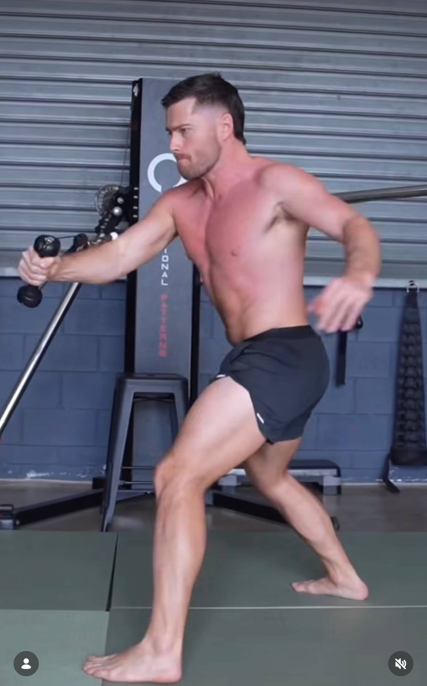
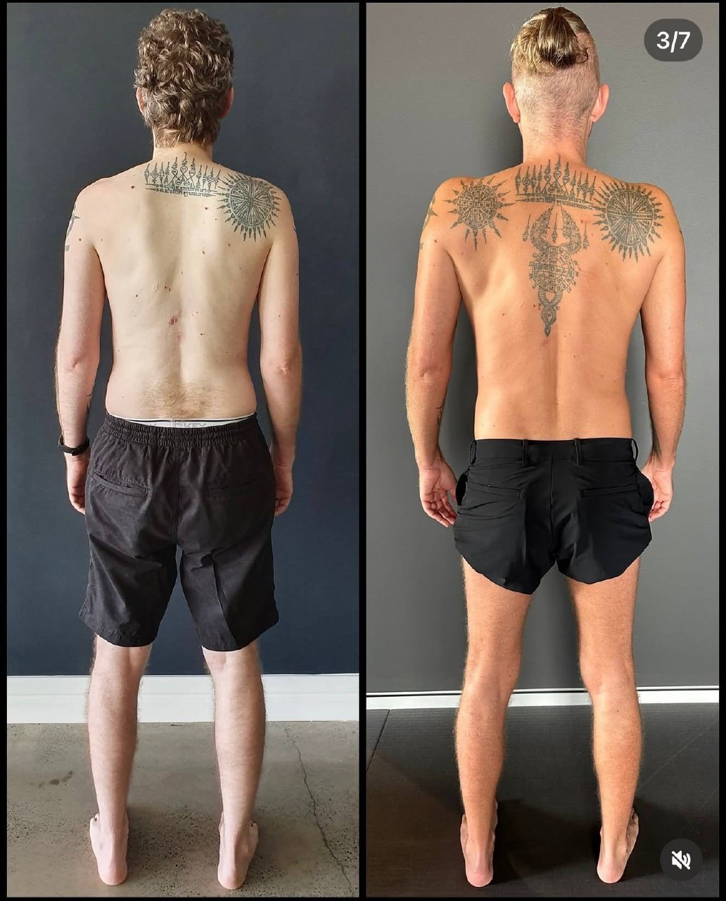

Why some people "do everything right"… and still don't get better
You've:
Strengthened the area
Stretched consistently
Tried massage, physio, even injections
And yet:
The pain comes back
Your posture doesn't hold
Your body feels like it's fighting you
At that point, it's not a lack of effort.
It's usually a misunderstanding of what actually drives change inside the body.
The concept most people have never heard of
There's a term in biology that explains a lot of this:
Mechanotransduction
It sounds complex, but the idea is simple:
Your body doesn't just respond to what you eat or what you think. It responds to mechanical forces.
Every time you:
Stand
Walk
Sit
Train
…you are sending physical signals into your cells.
Those signals influence:
Tissue structure
Muscle function
Fascia organisation
Even gene expression
What the research actually shows
Cells respond directly to mechanical load
Studies show that cells can detect:
Compression
Tension
Shear forces
…and convert those into biochemical signals that change how they behave.
This is the core of mechanotransduction.
Fascia is not passive—it's responsive
Research into connective tissue shows fascia:
Adapts to the forces placed on it
Becomes stiffer or more elastic depending on load
Transmits force across the entire body
Meaning: your movement patterns literally shape your tissue.
Poor mechanics = poor signals
If your movement is inefficient:
Forces are unevenly distributed
Certain areas are overloaded
Others are underused
Your body adapts to that pattern.
Not the one you want—the one you repeat.

Why stretching and isolated exercises fall short
This is where most conventional approaches break down.
They try to fix the body by:
Isolating muscles
Reducing tension locally
Treating symptoms
But mechanotransduction doesn't work locally.
It works at the level of:
Whole-body force distribution
Repeated movement patterns
Long-term mechanical input
So if your:
Walking pattern is off
Posture is unbalanced
Training lacks integration
…you're constantly feeding your body the wrong signals.
A simple way to think about it
Your body is always asking:
"What forces am I experiencing regularly?"
Then it adapts to match those forces.
If those forces are:
Asymmetrical
Compressive in the wrong areas
Lacking rotation or coordination
Your body will:
Reinforce tension patterns
Build compensation strategies
Maintain the very issues you're trying to fix
Real-world example: why your posture won't hold
You can "fix" your posture in front of a mirror.
But if:
Your ribcage and pelvis aren't coordinated
Your gait doesn't support that position
Your body can't manage force efficiently
…it won't last.
Because your cells are adapting to:
How you move for hours each day
Not the 2 minutes you stand up straight

What actually drives change in the body
If mechanotransduction is the input system, then the solution is obvious:
You need to change the mechanical signals you're giving your body.
That means:
1. Better force distribution
Not just "stronger muscles," but:
Load shared across the system
Reduced overload in specific areas
2. Coordinated movement patterns
Especially:
Rotation
Gait (how you walk)
Transitions between movements
3. Consistent, repeatable inputs
Your body adapts to what you do most often.
Not what you do occasionally.
Why this matters for pain and injury
This is why people experience:
Chronic tightness
Recurring injuries
"Random" flare-ups
It's not random.
It's the result of:
Long-term mechanical inputs
Reinforced through daily movement
Until those inputs change, the body has no reason to change.
The Functional Patterns approach
At Functional Patterns Brisbane, we work directly with mechanotransduction.
We assess:
How your body distributes force
How you walk, stand, and move
Where tension is being created unnecessarily
Then we:
Reorganise your movement patterns
Reintroduce proper rotational mechanics
Build strength that transfers into real-world movement
So instead of chasing symptoms, we change the signals your body is adapting to.
Who this is for
This approach tends to resonate if:
You've tried multiple treatments with only temporary relief
You feel like your body doesn't "hold" changes
You want to understand why things aren't improving
The bottom line
Your body is always adapting.
The question is:
What is it adapting to?
If your movement patterns don't change, your outcomes won't either.
Want to see what your body is adapting to?
If you're in Brisbane and want a clear breakdown of your movement, posture, and force distribution:
Book an Initial Consultation at Functional Patterns Brisbane.
We'll show you:
What your body is currently adapting to
Where things are breaking down
What needs to change to actually get results